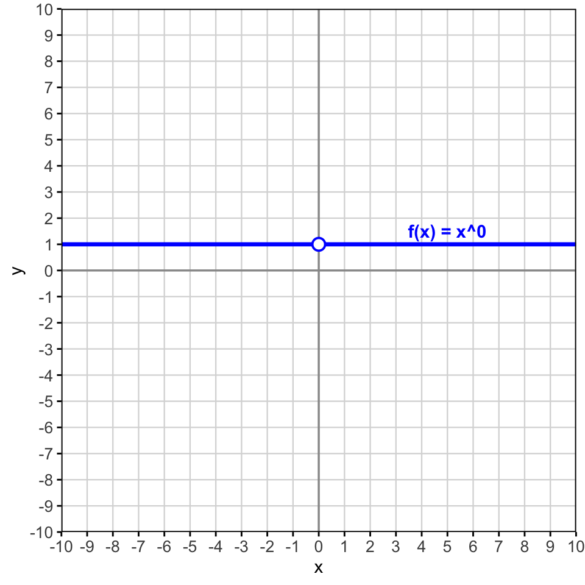
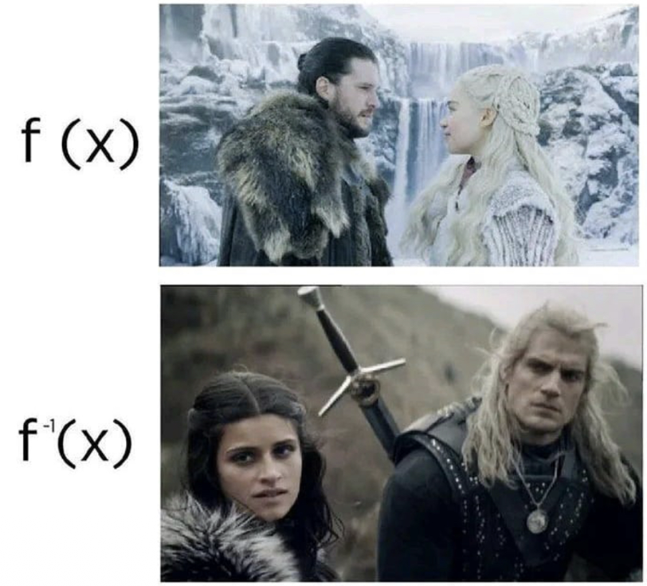
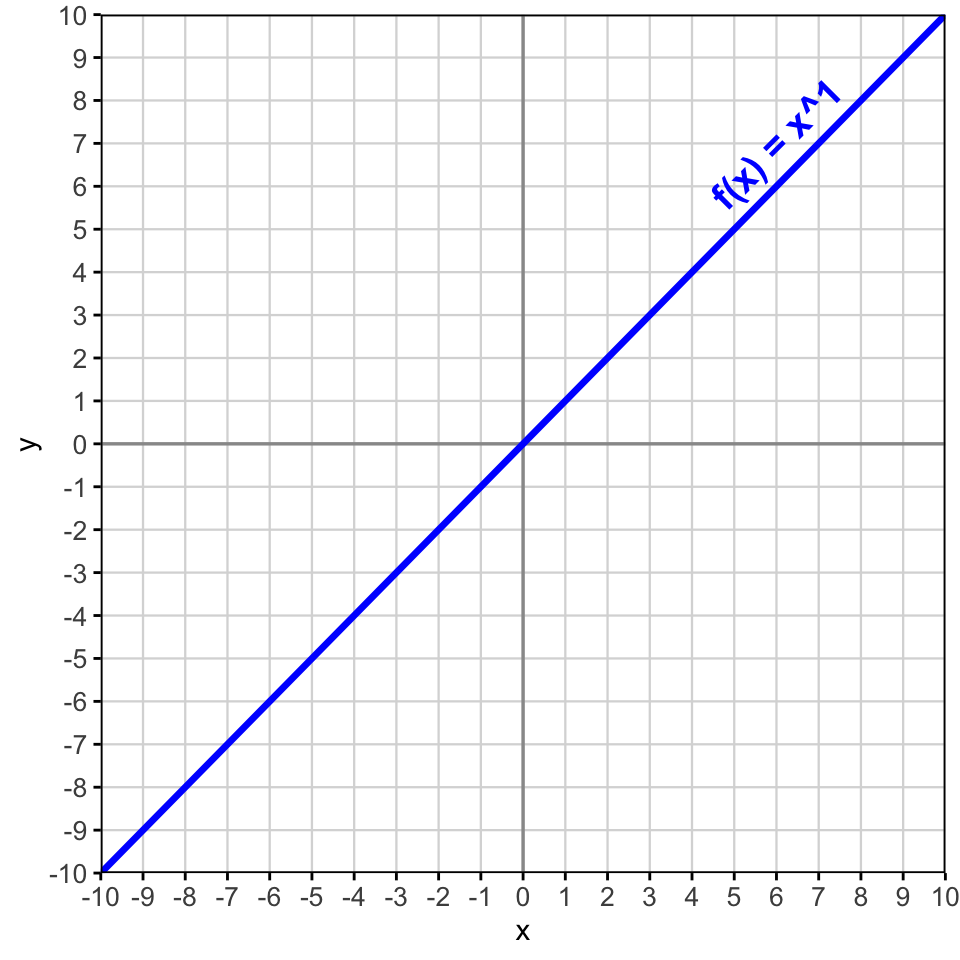
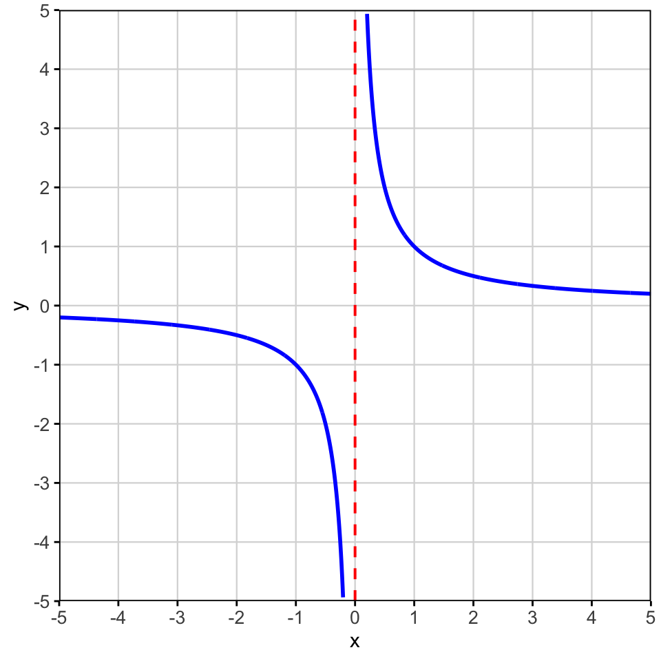

3 Potenzen und Potenzfunktionen

3.1 Potenzen mit ganzzahligen Exponenten
Bisher haben wir nur Potenzen betrachtet mit natürlichen Zahlen oder der Zahl \(0\) als Exponent. In verschiedenen Anwendungsbereichen der Mathematik ist es aber hilfreich auch andere Zahlen im Exponenten zu erlauben. Deshalb möchten wir uns anschauen, was eine negative Zahl, ein Bruch oder gar eine irrationa le Zahl als Exponent bedeutet.
3.1.1 Definition
Als Repetition möchten wir uns anschauen, wie eine Potenz definiert ist. Wir beginnen bei den Grundoperationen und betrachten, wie die Addition mit der Multiplikation zusammenhängt.
Die Multiplikation ist entsprechend die Kurzform für eine Addition mit identischen Summanden. In selber weise hängen auch die Multiplikation und Potenz zusammen.
Die Potenz entspricht also der Kurzform einer Multiplikation mit identischen Faktoren. Wir kennen Spezialfälle:
Mit der Idee der Potenz als wiederholte Multiplikation können wir keine negativen oder gar Bruchzahlen im Exponenten haben. Es ist nicht möglich eine Zahl \(a\) \((−5)\) mal mit sich selbst zu multiplizieren und schon gar nicht die Zahl \(a\) ein Drittel Mal mit sich selbst zu multiplizieren.
Wir benötigen also ein anderes Verständnis für die Potenz. Betrachten wir folgende Zahlenreihe
- \(5^4 = 625\)
- \(5^3 = 125\)
- \(5^2 = 25\)
- \(5^1 = 5\)
- \(5^0 = 1\)
- \(5^{-1} = ?\)
- \(5^{-2} = ?\)
- \(5^{-3} = ?\)
- \(5^{-4} = ?\)
Aufgaben
Notieren Sie als einzelne Potenz.
- \(k^4 \cdot k^2\)
- \((m^3)^t\)
- \((3^s)^s\)
- \(\frac{z^7}{z^{4t}}\)
- \(w^{7p} : w^5\)
- \(4\cdot 2^n\)
- \((2^{x+1})^2\)
- \(\frac{a^{-n}}{a^{2+n}}\)
Lösungen
- \(k^6\)
- \(m^{3t}\)
- \(3^{s^2}\)
- \(z^{7-4t}\)
- \(w^{7p-5}\)
- \(2^{n+2}\)
- \(2^{2x+2}\)
- \(a^{-2-2n}\)
3.1.2 Wissenschaftliche Schreibweise
Wenn wir sehr grosse Zahlen oder auch Zahlen sehr nahe bei Null als Dezimalzahl notieren, so haben diese Zahlen sehr viele Nullen und sind deshalb schwer zu lesen. Aus diesem Grund schreibt man diese Zahlen oft kompakter mit Hilfe von Zehnerpotenzen. Man nennt diese Schreibweise auch wissenschaftliche Schreibweise.
- grosse Zahl: Lichtgeschwindigkeit \(c=299'800'000 \frac{m}{s}\)
- kleine Zahl: Atommradius von Kohlenstoff \(r_C=0.000'000'000'17m\)
Beispiele
Erddurchmesser:
\(12'742\text{ km} = 1.2742 \cdot 10^4\text{ km}\)Durchmesser eines Atoms:
\(0.000\,000\,000\,1\text{ m} = 1 \cdot 10^{-10}\text{ m}\)Bevölkerungszahl der Erde:
\(8'000'000'000 = 8 \cdot 10^9\)Masse eines Protons:
\(0.000\,000\,000\,000\,000\,000\,000\,00167\text{ kg} = 1.67 \cdot 10^{-27}\text{ kg}\)
3.1.2.1 SI-Präfixe
In den Naturwissenschaften, wie z.B. in der Physik, verwendet man anstelle der Zehnerpotenzen oft sogenannte Präfixe für Zahlen. Einige davon kennt man auch aus dem Alltag, wie der Kilometer (\(1km= 1\cdot 10^3m= 1'000m\)) oder auch das Gigabyte für Speicherplatz z.B. bei euren Laptops oder Tablets. In der Tabelle unten finden Sie eine Auflistung dieser SI-Präfixe:
| Zahl | Wert | Präfix | | | Präfix | Wert | Zahl |
|---|---|---|---|---|---|---|
| 10 | 10¹ | da (Deka) | | | d (Dezi) | 10⁻¹ | 0.1 |
| 100 | 10² | h (Hekto) | | | c (Zenti) | 10⁻² | 0.01 |
| 1 000 | 10³ | k (Kilo) | | | m (Milli) | 10⁻³ | 0.001 |
| 1 000 000 | 10⁶ | M (Mega) | | | µ (Mikro) | 10⁻⁶ | 0.000 001 |
| 1 000 000 000 | 10⁹ | G (Giga) | | | n (Nano) | 10⁻⁹ | 0.000 000 001 |
| 1 000 000 000 000 | 10¹² | T (Tera) | | | p (Piko) | 10⁻¹² | 0.000 000 000 001 |
| 1 000 000 000 000 000 | 10¹⁵ | P (Peta) | | | f (Femto) | 10⁻¹⁵ | 0.000 000 000 000 001 |
| 1 000 000 000 000 000 000 | 10¹⁸ | E (Exa) | | | a (Atto) | 10⁻¹⁸ | 0.000 000 000 000 000 001 |
| 1 000 000 000 000 000 000 000 | 10²¹ | Z (Zetta) | | | z (Zepto) | 10⁻²¹ | 0.000 000 000 000 000 000 001 |
| 1 000 000 000 000 000 000 000 000 | 10²⁴ | Y (Yotta) | | | y (Yokto) | 10⁻²⁴ | 0.000 000 000 000 000 000 000 001 |
3.2 Potenzen mit rationalen Exponenten
Bevor wir uns anschauen, was eine rationale Zahl wie z.B. \(\frac{1}{3}\) im Exponenten einer Potenz bedeuten, möchten wir uns in Erinnerung rufen, wie die (Quadrat-)Wurzel definiert wurde und diese Definition verallgemeinern als Umkehrung einer allgemeinen Potenz.
3.2.1 Verallgemeinerung der Wurzel
Wir haben die Wurzel einer Zahl \(a\) definiert als die Umkehrung für des Quadrierens. Analog kennen wir die Subtraktion als Umkehrung der Addition und die Division als Umkehrung der Multiplikation.
Grundoperationen
Die Addition und ihre Umkehrung:
- Addition: \(3 + 2 = 5\)
- Umkehrung (Subtraktion): \(5 - 2 = 3\)
Die Multiplikation und ihre Umkehrung:
- Multiplikation: \(4 \cdot 3 = 12\)
- Umkehrung (Division): \(frac{12}{3} = 4\)
Umkehrung allgemeine Potenz
Doch wie sieht die Umkehrung einer allgemeinen Potenz aus? Dazu betrachten wir die Gleichung: \[ x^4 = 81 \]
Daraus finden wir folgende Definition:
Bemerkung
Aus der Definition folgt direkt, dass \((\sqrt[n]{a})^n = a\) und \(\sqrt[n]{b^n} = b \quad \forall \quad a,b\geq 0\)
Beispiele
- \(\sqrt[4]{81} = 3\), denn \(3^4 = 81\)
- \(\sqrt[3]{125} = 5\), denn \(5^3 = 125\)
- \(\sqrt[5]{1} = 1\), denn \(1^5 = 1\)
- \(\sqrt[3]{0} = 0\)
- \(\sqrt[2]{49} = \sqrt{49} = 7\)
3.2.1.1 Wurzelgesetze
Die Wurzelgesetze, die wir bereits bei der Quadratwurzel kennengelernt haben gelten auch weiterhin für die verallgemeinerte Definition der \(n\)-ten Wurzel.
Bemerkung
Auch für die \(n\)-te Wurzel gilt die oft vergessene (aber wichtige) Regel:
\(\sqrt[n]{a^n} = \pm a\) für gerade \(n\)
3.2.2 Potenzen mit Brüchen im Exponenten
Wie bei den negativen Exponenten sollen auch für Brüche im Exponent die Potenzgesetze weiter gelten. Anhand dieser möchten wir uns nun herleiten, was ein Bruch im Exponent bedeutet.
Herleitung Bruch im Exponent
Wir erinnern uns an die folgenden Potenzgesetze:
- \(a^{m \cdot n} = (a^m)^n\)
- \(a^1 = a\)
Nun betrachten wir die Frage:
Was bedeutet \(a^{\frac{1}{n}}\)?
Wir suchen eine Zahl \(x\), sodass
\[ x^n = a \]
Damit muss gelten:
\[ a^{\frac{1}{n}} = x = \sqrt[n]{a} \]
Für einen allgemeinen Bruchexponenten folgt mit dem Potenzgesetz:
\[ a^{\frac{m}{n}} = (a^{\frac{1}{n}})^m = \left(\sqrt[n]{a}\right)^m = \sqrt[n]{a^m} \]
Wir finden die Verallgemeinerung: \[ a^{\frac{1}{n}} = \sqrt[n]{a} \]
Aufgabe
Notieren sie \[ a^{\frac{3}{7}} \]
mit den bekannten Operatoren
Bemerkung
- Die allgemeinen Potenzgesetzte gelten auch für rationale Exponenten.
- Die Exponenten dürfen auch als Dezimalzahlen geschrieben sowie erweitert oder gekürzt werden.
Beispiele
- \(16^{1/2} = \sqrt{16} = 4\)
- \(27^{1/3} = \sqrt[3]{27} = 3\)
- \(8^{2/3} = (\sqrt[3]{8})^2 = 2^2 = 4\)
- \(81^{3/4} = (\sqrt[4]{81})^3 = 3^3 = 27\)
- \(5^{0.5} = \sqrt{5}\)
- \(49^{-1/2} = \frac{1}{\sqrt{49}} = \frac{1}{7}\)
Aufgaben
Notieren Sie als einzelne Potenz mit möglichst kleiner Basis.
- \(\sqrt[3]{7}\)
- \(\frac{4}{\sqrt{2}}\)
- \(2\cdot \sqrt[3]{2}\)
- \(49^{1.5}\)
- \(\frac{7}{\sqrt[7]{49}}\)
- \(\sqrt[6]{16}\)
Lösungen
- \(7^{\frac{1}{3}}\)
- \(2^{\frac{3}{2}}\)
- \(2^{\frac{4}{3}}\)
- \(7^{\frac{3}{1}}\)
- \(7^{\frac{5}{7}}\)
- \(2^{\frac{2}{3}}\)
3.2.3 Reelle Exponenten
Es liegt nahe festzulegen, dass alle Potenzgesetze weiter gelten, selbst wenn im Exponenten reelle Zahlen vorkommen. Es dürfen also im Exponenten auch irrationale Zahlen, wie z.B. \(\sqrt{2}\), vorkommen. In diesem Fall ist es aber nicht mehr so einfach den Wert der Potenz zu bestimmen.
Beispiele
- \(\left(a^{\sqrt{2}}\right)^{\sqrt{18}}\)
- \(a^{\sqrt{2}} \cdot a^{\sqrt{18}}\)
Was versteht man unter \(3^\sqrt{2}\)?
Wir kommen der unbekannten \(3^\sqrt{2}\) immer näher, wenn man \(\sqrt{2}\) durch rationale untere und obere Schranken immer enger einschränkt:
Es ist also sinnvoll \(3^\sqrt{2}\) also jede Zahl zu festzulegen, die zwischen allen Zahlen \(3^x\) mit rationalem \(x<\sqrt{2}\) und allen Zahlen \(3^y\) mit rationalem \(y>\sqrt{2}\) liegt.
Bemerkung
Es lässt sich beweisen, dass es in jedem Fall genau eine solche Zahl gibt und \(a^r\) somit eindeutig ist. Ausserdem kann man zeigen, dass es mit dieser Definition für \(r \in \mathbb{Q}\) dieselbe Zahl herauskommt wie mit der bisherigen Definition für rationale Exponenten.
3.3 Gleichungen mit Potenzen
Als erste Anwendung möchten wir uns noch einige einfache Gleichungen mit Potenzen anschauen, bei denen entweder die Basis oder der Exponent einer Potenz gesucht sind.
3.3.1 Potenzgleichungen
Einer ersten Potenzgleichung sind wir schon mehrfach begegnet - die rein quadratische Gleichung. Dabei kam die Lösungsvariable (meist \(x\)) nur mit Potenz \(2\) (also im Quadrat) vor, nicht aber mit anderen Exponenten (oder linear).
Beispiele
- \(x^2 = 64\)
- \(x^2−4 = 0\)
- \(x^2 =−81\)
- \(x^2 + 25 = 0\)
Ähnlich wie bei der rein quadratischen Gleichung kommt bei einer Potenzgleichung die Lösungsvariable (meist x) nur mit einem Exponenten n vor, nicht aber noch mit anderen Exponenten m.
Beispiele
- \(x^5 = 32 \quad\Rightarrow\quad x = \sqrt[5]{32} = 2\)
- \(x^4 = 625 \quad\Rightarrow\quad x = \pm \sqrt[4]{625} = \pm 5\)
- \(x^3 = -27 \quad\Rightarrow\quad x = -3\)
- \(x^6 = 1 \quad\Rightarrow\quad x = \pm 1\)
- \(x^7 = 0 \quad\Rightarrow\quad x = 0\)
Potenzgleichungen mit geraden Exponenten
- \(x^6 = 64\)
- \(x^4 = -16\)
Bemerkung
Eine Potenzgleichung \(x^n = b\) mit geradem Exponenten (\(n\in \mathbb{N}\)) und \(b\in \mathbb{R}\) kann keine, eine oder zwei Lösungen besitzen. Wir unterscheiden die Fälle:
- \(b<0\) keine Lösung
- \(b= 0\) eine Lösung, nämlich \(x= 0\)
- \(b>0\) zwei Lösungen, nämlich \(x_1 =\sqrt[n]{b}\) und \(x_2 =-\sqrt[n]{b}\)
Potenzgleichungen mit ungeraden Exponenten
- \(x^3 = 216\)
- \(x^5 = -32\)
Bemerkung
Eine Potenzgleichung \(x^n = b\) mit ungeradem Exponenten \((n \in \mathbb{N})\) und \(b \in \mathbb{R}\) besitzt immer genau eine Lösung. Wir unterscheiden die Fälle:
- \(b<0\) Lösung: \(x=−\sqrt[n]{|b|}\)
- \(b= 0\) Lösung: \(x= 0\)
- \(b>0\) Lösung: \(x=\sqrt[n]{b}\)
Weitere Beispiele
- \(8x^3 = x^3 -7\)
- \(3(−x^3 + 5) =−9 −6x^3\)
3.3.2 Exponentialgleichungen
Exponentialgleichungen sind Gleichungen bei denen die Lösungsvariable (meist \(x\)) im Exponent einer Potenz vorkommt. Solche Gleichungen werden wir später noch genauer anschauen und eine allgemeine Lösungsmethode kennenlernen. Wir möchten aber bereits jetzt eine Lösungsmethode anschauen, mit der wir bestimmte Exponentialgleichungen bereits lösen können.
Beispiele
- \(3^x = 81\)
- \(9^5 = 3^{x-5}\)
Wir können Exponentialgleichungen nur dann lösen, wenn wir auf beiden Seiten der Gleichung eine Potenz mit gleicher Basis haben. In diesem Fall lösen wir die Gleichung durch einen Vergleich der Exponenten. Damit die Potenz bei gleicher Basis den gleichen Wert hat, muss auch ihr Exponent gleich sein. Um eine Exponentialgleichung zu lösen, vereinfachen wir die Potenzen, um eine möglichst kleine natüriche Zahl als Basis zu erhalten. Falls diese Basis auf beiden Seiten dieselbe ist, setzten anschliessend die Exponenten gleich und lösen die so erhaltene Gleichung nach der Lösungsvariable auf.
Beispiele
- \(5^3 + 2^x = 157\)
- \(3\cdot 2^x = 120 - 6\cdot 2^{x+1}\)
- \(3\cdot 4^x = 6\cdot 2^{x+5}\)
- \(8^{x+2} \cdot 2^{x-1} = 4^{x+5}\)
3.3.3 Negative und rationale Exponenten
In Gleichungen mit Potenzen, bei denen die Lösungsvariable in der Basis oder auch im Exponenten vorkommt können auch rationale Exponenten auftreten. Wir möchten dazu einige Beispiele anschauen. Die Lösungsideen sind dieselben wie im Fall von natürlichen Exponenten.
Negative Exponenten und Lösungsvariable in der Basis
- \(x^3 =27^{-2}\)
- \(x^{-5} = 32\)
- \(x^{-4} = \frac{16}{81}\)
- \(x^{-2} = 9\cdot 10^{-12}\)
Lösungen
- \(x^3 = 27^{-2}\)
\[ 27 = 3^3 \Rightarrow 27^{-2} = (3^3)^{-2} = 3^{-6} \Rightarrow x = 3^{-2} = 3^{-6/3} = 3^{-2} \]
- \(x^{-5} = 32\)
\[ x^{-5} = \frac{1}{x^5} \Rightarrow \frac{1}{x^5} = 2^5 \Rightarrow x^5 = 2^{-5} \Rightarrow x = 2^{-1} \]
- \(x^{-4} = \frac{16}{81}\)
\[ x^{-4} = \frac{1}{x^4} \Rightarrow x^4 = \frac{81}{16} = \left(\frac{3}{2}\right)^4 \Rightarrow x = \left(\frac{3}{2}\right) \]
- \(x^{-2} = 9\cdot10^{-12}\)
\[ x^{-2} = \frac{1}{x^2} \Rightarrow x^2 = \frac{1}{9\cdot10^{-12}} = 10^{12}\cdot 3^{-2} \Rightarrow x = 10^6\cdot 3^{-1} = 3^{-1}\cdot10^6 \]
Negative Exponenten und Lösungsvariable im Exponenten
- \(3^{x-5} = 3^2\)
- \(2^4 + 3^{5-x} = 5^2\)
- \(2^{-3} \cdot 2^{2-x} = 2^{-5}\)
- \(2^x \cdot 8^3 = 4^{x-1} \cdot 16\)
Lösungen
- \(3^{x-5} = 3^2\)
\[ x - 5 = 2 \Rightarrow x = 7 \]
- \(2^4 + 3^{5-x} = 5^2\)
\[ 16 + 3^{5-x} = 25 \Rightarrow 3^{5-x} = 9 = 3^2 \Rightarrow 5-x=2 \Rightarrow x = 3 \]
- \(2^{-3}\cdot 2^{2-x} = 2^{-5}\)
\[ 2^{-3+2-x} = 2^{-5} \Rightarrow 2^{-1-x}=2^{-5} \Rightarrow -1-x=-5 \Rightarrow x=4 \]
- \(2^x \cdot 8^3 = 4^{x-1} \cdot 16\)
\[ 8^3 = 2^9, \quad 4^{x-1} = 2^{2x-2} \]
\[ 16 = 2^4 \Rightarrow 2^x\cdot2^9 = 2^{2x-2}\cdot2^4 \]
\[ \Rightarrow 2^{x+9} = 2^{2x+2} \Rightarrow x=7 \]
Rationale Exponenten und Lösungsvariable in der Basis
- \(\sqrt[3]{x} = 6\)
- \(\frac{2}{\sqrt[5]{x}} = \frac{5}{\sqrt[3]{x}}\)
Lösungen
- \(\sqrt[3]{x} = 6\)
\[ x = 6^3 = 216 \]
- \(\frac{2}{\sqrt[5]{x}} = \frac{5}{\sqrt[3]{x}}\)
\[ 2x^{-1/5} = 5x^{-1/3} \Rightarrow 2x^{1/3} = 5x^{1/5} \Rightarrow x = \left(\frac{32}{25}\right)^{15} \]
Rationale Exponenten und Lösungsvariable im Exponenten
- \(32 = 4^x\)
- \(3^{2x+1} = 81\)
- \(5^x = \frac{1}{\sqrt[]{25}}\)
- \(3^{\sqrt{2}} = 9^{x+1}\)
Lösungen
- \(32 = 4^x\)
\[ 32 = 2^5, \quad 4 = 2^2 \Rightarrow 2^5 = 2^{2x} \Rightarrow x = \frac{5}{2} \]
- \(3^{2x+1} = 81\)
\[ 81 = 3^4 \Rightarrow 2x+1 = 4 \Rightarrow x = \frac{3}{2} \]
- \(5^x = \frac{1}{\sqrt{25}}\)
\[ x=-1 \]
- \(3^{\sqrt{2}} = 9^{x+1}\)
\[ 9 = 3^2 \Rightarrow 3^{\sqrt{2}} = 3^{2x+2} \Rightarrow 2x+2 = \sqrt{2} \Rightarrow x = \frac{\sqrt{2}-2}{2} \]
Aufgaben
- Lösen Sie die Potenzgleichungen.
- \(5 + 4x^3 = 113\)
- \(7-6x^4 = 5x^4 - 13^2\)
- \(\frac{2^3 - x^5}{2^2} = 10\)
- Lösen Sie die Potenzgleichungen.
- \(5x^3 = 135\)
- \(3x^4 = x^4 + 2^5\)
- Lösen Sie die Gleichungen.
- \(4x^3 + 108 = 0\)
- \(6x^4 = 2x^4 + 2^2\)
- \(x^{-2} = \frac{36}{49}\)
- \(x^{-1} : (27^{-2}) = x^{-4}\)
- Lösen Sie die Exponentialgleichungen
- \(2^4 + 9\cdot 3^x = 7 + 4\cdot 3^{x+1}\)
- \(9\cdot 3^x = 27\cdot 9^{x-2}\)
- Lösen Sie die Exponentialgleichungen.
- \(125^{x-1}\cdot 5^{x-1} = 25^{x+5}\)
- \(2^{x-5}\cdot 48 = 3\cdot 4^{x-2}\)
- \(2^5 + 5\cdot 3^x = 2\cdot 3^{x+1} + 5\)
- Lösen Sie die Gleichungen.
- \(3^{x-2} = 12\)
- \(3 + x^{-2} = 12\)
- \(2^{x-8}\cdot 32 = 4^x\)
- \(3^x = 81\cdot 3^{-x}\)
- \(3^x + 3^{3-x} = 12\)
- \(2^x + 2^{6-x} = 20\)
- Lösen Sie die Gleichungen.
- \(x^4 = (\sqrt{5})^3\)
- \(16^x\cdot 2^4 = 2^x\)
- \(4\cdot 2^x\cdot 32 = 4^x\)
- \(\frac{x}{\sqrt[3]{x}} = \frac{6}{\sqrt[6]{x}}\)
- \(16^x + 2^4 = 10\cdot 4^x\)
- \(4\cdot 2^x + 32 = 4^x\)
- Lösen Sie die Gleichungen.
- \(4^{x-1} = \frac{4}{\sqrt[4]{4}}\)
- \(\frac{3}{\sqrt[4]{x}} = \frac{8}{\sqrt[5]{x}}\)
- \(9^{x+4}\cdot 3^4 = \frac{27^{x-1}}{81}\)
- \(4^\sqrt{2} = 4^{x+\sqrt{2}}\)
- \(x^2 = (\sqrt{6})^{-4}\)
- \(x^{0.3} = 3\)
Lösungen zu Aufgabe 1
a)
\[5+4x^3=113\] \[4x^3=108\] \[x^3=27\] \[x=3\]
b)
\[7-6x^4=5x^4-13^2=5x^4-169\] \[176=11x^4\] \[x^4=16\] \[x=\pm2\]
c)
\[\frac{2^3-x^5}{2^2}=10\] \[8-x^5=40\] \[x^5=-32\] \[x=-2\]
Lösungen zu Aufgabe 2
a)
\[5x^3=135\] \[x^3=27\] \[x=3\]
b)
\[3x^4=x^4+2^5=x^4+32\] \[2x^4=32\] \[x^4=16\] \[x=\pm2\]
Lösungen zu Aufgabe 3
a)
\[4x^3+108=0\] \[x^3=-27\] \[x=-3\]
b)
\[6x^4=2x^4+2^2=2x^4+4\] \[4x^4=4\] \[x^4=1\] \[x=\pm1\]
c)
\[x^{-2}=\frac{36}{49}\] \[\frac{1}{x^2}=\frac{36}{49}\] \[x^2=\frac{49}{36}\] \[x=\pm\frac{7}{6}\]
d)
\[x^{-1}:(27^{-2})=x^{-4}\] \[\frac{1}{x}\cdot27^2=\frac{1}{x^4}\] \[729x^3=1\] \[x=\frac{1}{9}\]
Lösungen zu Aufgabe 4
a)
\[2^4+9\cdot3^x=7+4\cdot3^{x+1}\] \[16+9\cdot3^x=7+12\cdot3^x\] \[9=3\cdot3^x\] \[3^x=3\] \[x=1\]
b)
\[9\cdot3^x=27\cdot9^{x-2}\] \[3^{x+2}=3^{2x-1}\] \[x+2=2x-1\] \[x=3\]
Lösungen zu Aufgabe 5
a)
\[125^{x-1}\cdot5^{x-1}=25^{x+5}\] \[5^{4x-4}=5^{2x+10}\] \[4x-4=2x+10\] \[x=7\]
b)
\[2^{x-5}\cdot48=3\cdot4^{x-2}\] \[2^{x-5}\cdot2^4\cdot3=3\cdot2^{2x-4}\] \[2^{x-1}=2^{2x-4}\] \[x=3\]
c)
\[2^5+5\cdot3^x=2\cdot3^{x+1}+5\] \[32+5\cdot3^x=6\cdot3^x+5\] \[27=3^x\] \[x=3\]
Lösungen zu Aufgabe 6
a)
\[3^{x-2}=12\] \[x-2=\log_3 12\] \[x=2+\log_3 12\]
b)
\[3+x^{-2}=12\] \[x^{-2}=9\] \[x^2=\frac{1}{9}\] \[x=\pm\frac{1}{3}\]
c)
\[2^{x-8}\cdot32=4^x\] \[2^{x-3}=2^{2x}\] \[x=-3\]
d)
\[3^x=81\cdot3^{-x}\] \[3^{2x}=81\] \[x=2\]
e)
\[3^x+3^{3-x}=12\] \[x=1 \quad \text{oder} \quad x=2\]
f)
\[2^x+2^{6-x}=20\] \[x=2 \quad \text{oder} \quad x=4\]
Lösungen zu Aufgabe 7
a)
\[x^4=(\sqrt5)^3=5^{3/2}\] \[x=\pm5^{3/8}\]
b)
\[16^x\cdot2^4=2^x\] \[2^{4x+4}=2^x\] \[x=-\frac{4}{3}\]
c)
\[4\cdot2^x\cdot32=4^x\] \[2^{x+7}=2^{2x}\] \[x=7\]
d)
\[\frac{x}{\sqrt[3]{x}}=\frac{6}{\sqrt[6]{x}}\] \[x^{5/6}=6\] \[x=6^{6/5}\]
e)
\[16^x+2^4=10\cdot4^x\] \[2^{4x}-10\cdot2^{2x}+16=0\] \[x=1 \quad \text{oder} \quad x=2\]
f)
\[4\cdot2^x+32=4^x\] \[2^{x+2}+2^5=2^{2x}\] \[x=3\]
Lösungen zu Aufgabe 8
a)
\[4^{x-1}=\frac{4}{\sqrt[4]{4}}=4^{3/4}\] \[x=\frac{7}{4}\]
b)
\[\frac{3}{\sqrt[4]{x}}=\frac{8}{\sqrt[5]{x}}\] \[3x^{1/5}=8x^{1/4}\] \[x=\left(\frac{3}{8}\right)^{20}\]
c)
\[9^{x+4}\cdot3^4=\frac{27^{x-1}}{81}\] \[3^{2x+12}=3^{3x-7}\] \[x=19\]
d)
\[4^{\sqrt2}=4^{x+\sqrt2}\] \[x=0\]
e)
\[x^2=(\sqrt6)^{-4}=6^{-2}=\frac{1}{36}\] \[x=\pm\frac{1}{6}\]
f)
\[x^{0.3}=3\] \[x=3^{10/3}\]
3.4 Potenzfunktionen
3.4.1 Allgemeine Definition
Spezialfälle
\(p=0\rightarrow f(x) = x^0\)
\(p=1 \rightarrow f(x) = x^1\)

Beispiel 1/x
Die Funktion \(f(x) = \frac{1}{x}\) hat zum Beispiel eine Asymptote bei \(x=0\) (klar, durch Null kann nicht geteilt werden, der Wert strebt gegen \(y=\infty\))

3.4.2 Potenzfunktionen mit Ganzzahligen Exponenten
Wir betrachten zunächst lediglich Potenzfunktionen mit ganzzahligen Exponenten der Form \(f(x) = x^n\), wobei \(n\in \mathbb{Z}\). Diese Potenzfunktionen lassen sich in vier Klassen unterteilen abhängig von ihren Exponenten.
3.4.2.1 Fall: \(y= x^k\) mit \(k:\) gerade & positiv
3.4.2.2 Fall: \(y= x^k\) mit \(k:\) ungerade & positiv
3.4.2.3 Fall: \(y= x^k\) mit \(k:\) gerade & negativ
3.4.2.4 Fall: \(y= x^k\) mit \(k:\) ungerade & negativ
3.4.2.5 Zusammenfassung
3.4.3 Potenzfunktionen mit rationalen Exponenten
Wir möchten uns nun noch anschauen, was geschieht wenn im Zähler nicht eine ganze Zahl sondern ein Bruch steht. Bevor wir uns aber Potenzfunktionen \(f(x) = x^q\) mit gebrochenen Exponenten \(q\in \mathbb{Q} \backslash \mathbb{Z}\) anschauen, betrachten wir nur Stammbrüche als Exponenten und erhalten so die Wurzelfunktionen.
Bemerkung
Wurzelfunktionen sind nur definiert für positive Argumente \(x\geq 0\).
Auftrag
Zeichnen Sie mit Geogebra die Wurzelfunktionen \(f(x) =\sqrt[n]{x}\) für \(n = 2,3,5,6,10,15\). Skizzieren Sie im Koordinatensystem zwei dieser Funktionen und notieren Sie Eigenschaften der Wurzelfunktionen.
Was fällt Ihnen auf im Vergleich zu den Potenzfunktionen mit natürlichen Exponenten?
Wir betrachten nun noch allgemeinere Exponenten.
Bemerkung
Dies gilt ebenfalls für irrationale Exponenten \(q \in \mathbb{R} \backslash \mathbb{Q}\).
Auftrag
Zeichnen Sie mit Geogebra die Potenzfunktionen \(f(x) = x^q\) für \(q= \frac{2}{3}, \frac{3}{2}, -\frac{2}{3}, -\frac{3}{2}, \frac{8}{5}, \pi, \frac{2}{11}, -\sqrt{5}, -\frac{8}{9}\)
Skizzieren Sie im Koordinatensystem einige dieser Funktionen und beschreiben Sie den Einfluss des Exponenten auf die Form des Graphen. Was haben alle Funktionen gemeinsam? Notieren Sie die Eigenschaften.